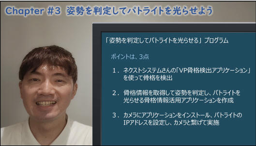
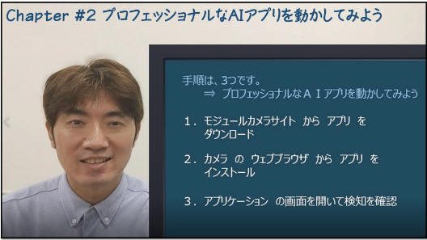
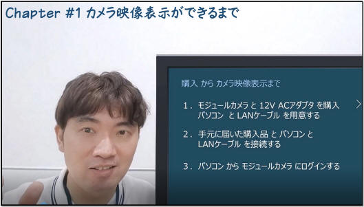

本ページは i-PRO株式会社 の有志メンバーにより記載されたものです。
本ページの情報は ライセンス に記載の条件で提供されます。
下記 i-PRO サイトで、AIカメラ向け機能拡張ソフトウェアの作り方を連載しています。本ページで紹介させていただきます。
今後も不定期で記事を投稿予定とのことです。
掲載場所： カメラエンジニアへの道！ - Module Camera Community - モジュールカメラ｜ポータルサイト (i-pro.com)
| 章 | タイトル |
|---|---|
Chapter #3 |
姿勢を判定してパトライトを光らせよう  Chapter ＃3でご紹介している各種動画・アプリケーションは、以下のリンクより参照いただけます。
|
Chapter #2 |
プロフェッショナルなAIアプリを動かしてみよう  |
Chapter #1 |
カメラ映像表示ができるまで  |
本ページの情報は、特記無い限り下記ライセンスで提供されます。
| 2022/10/5 | - | 新規作成, | 木下英俊 |
i-PRO - Programming Items トップページ